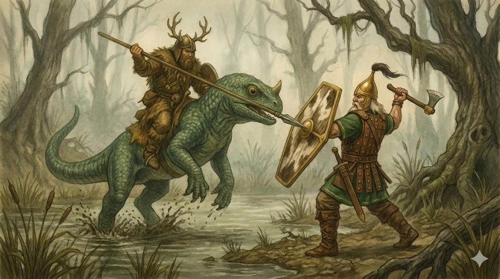

Tirnara
???
Für diese in Tirnara vermerkte Variante sind Name, Merkmale und Lebensweise noch nicht überliefert.
Lothir · Móinneach und weitere Sumpfregionen · Archivblatt I / 07-A
Domestiziertes Sumpf-, Last- und Reittier
Der Drúchtán ist ein robustes Sumpfreptil, das vor allem in Móinneach vorkommt und dort als friedliches Reit-, Last- und Arbeitstier vollständig in das alltägliche Leben eingebunden wurde.

„Wo der Weg im Moor endet, beginnt der Drúchtán erst zu tragen.“Sprichwort aus Móinneach
Sechs Merkmale · Skala 1–10
Die Werte wurden aus den überlieferten Beschreibungen abgeleitet und machen verwandte Arten und Linien vergleichbar.
Quelle der Einordnung: Aus Arttext, Domestikationsbericht und Kampfverhalten abgeleitete Archivbewertung
Stammbaum der Sumpfreptilien
Zwei benannte Linien sind ausführlich überliefert. Drei weitere Plätze aus der alten Übersicht bleiben offen, bis Namen und Merkmale feststehen.

Estryll · Sumpfregionen
Die wilde, carnivore Unterart des Drúchtán trägt einen leuchtend roten Rückenkamm und gilt als nicht zähmbar.

Lothir · Sumpfregionen
Ein friedfertiger, schwer gepanzerter Verwandter des Drúchtán und ein außergewöhnlich kräftiges Lasttier.
Tirnara
Für diese in Tirnara vermerkte Variante sind Name, Merkmale und Lebensweise noch nicht überliefert.
???
Dieser Platz der alten Variantenübersicht bleibt frei, bis eine weitere Drúchtán-Linie überliefert ist.
???
Dieser Platz der alten Variantenübersicht bleibt frei, bis eine weitere Drúchtán-Linie überliefert ist.
Der Drúchtán ist ein robustes Sumpfreptil, das vor allem im Fürstentum Móinneach vorkommt, aber auch in anderen feuchten Niederungen des Kontinents Lothir und darüber hinaus in mehreren sumpfgeprägten Regionen der Welt Aleria anzutreffen ist. Obwohl die Art in Lothir schon seit alten Zeiten in kleiner Zahl existierte, wurde sie erst durch die Bewohner Móinneachs vollständig domestiziert und in das alltägliche Leben integriert.
Ein altes Ereignis veränderte den Kontinent grundlegend: Der Sumpf breitete sich in einer einzigen Epoche katastrophal aus – nicht doppelt, sondern um das Zehn- bis Fünfzigfache seiner ursprünglichen Fläche. Mit dieser gewaltigen Ausdehnung ihres bevorzugten Lebensraumes fand der Drúchtán ideale Bedingungen vor und vervielfältigte seine Population in kurzer Zeit. Wo die Menschen Mühsal sahen, sah das Reptil Gelegenheit – und so wurde der Drúchtán zu einem der prägenden Tiere des neuen Móinneach.
Der Drúchtán besitzt einen kompakten, kräftigen Körper mit vier kurzen, äußerst stabilen Beinen, die speziell dafür geschaffen sind, sein Gewicht im Morast gleichmäßig zu verteilen. Seine dicke, feuchtigkeitsresistente Schuppenhaut schützt vor Kälte, Parasiten und kleineren Raubtieren und tarnt ihn in den Grüntönen des Sumpfes nahezu perfekt.
Charakteristisch ist das einzelne Stirnhorn , das als weiche Knospe schlüpft, im Jugendstadium verhärtet und im Erwachsenenalter zu einem robusten Stoßhorn heranwächst. Während Männchen meist längere Hörner tragen, verfügen Weibchen über breitere Schädelplatten zum Schutz ihres Geleges. Ein langer, muskulöser Schwanz dient als Gleichgewichtshilfe, besonders auf nassem Untergrund oder im Wasser.
Die großen, leicht hervorstehenden Augen ermöglichen ein weites Sichtfeld – entscheidend in einer Umgebung voller Nebel und Bewegung. Von Ei bis Erwachsensein bleibt die Grundform gleich, doch der Drúchtán gewinnt stetig an Masse und Belastbarkeit, was ihn zu einem idealen Reit- und Lasttier macht.
Der Drúchtán stammt ursprünglich aus den tiefen Niederungen von Móinneach , wo das Tier schon existierte, lange bevor der Sumpf sein heutiges Ausmaß erreichte. Mit der gewaltigen Ausbreitung des Moorlandes fand die Art ideale Bedingungen vor und wurde zum prägenden Tier der Region. Andere Sumpfgebiete Alerias beherbergen eigene, leicht abweichende Varianten – dort unter lokalen Namen bekannt, doch stets eindeutig mit dem Drúchtán verwandt.
Der Name selbst hat alte gälische Wurzeln: drúcht bedeutet „Tau“ oder „feuchte Nässe“ , während das Suffix –án eine tierische oder verkleinernde Form bezeichnet. Wörtlich lässt sich Drúchtán somit als „das Tauwesen“ oder „das Feucht-Tier“ verstehen – eine treffende Beschreibung für ein Reptil, das in Dunst, Morast und nassem Untergrund gedeiht. Die Bewohner Móinneachs nutzen den Namen seit Generationen, doch jenseits des Sumpflandes existieren volkstümliche Varianten wie Drucht , Druanach oder Muirbeast , abhängig von Dialekt und kultureller Einfärbung.
Der Drúchtán ist im Kern ein friedliches, gutmütiges Sumpftier. Er verbringt den Großteil des Tages damit, in seichten Moorbecken zu ruhen, Wasserpflanzen zu zupfen oder sumpfeigene Kleintiere wie Aale, Insekten und Kriecher aufzulesen. Obwohl er omnivor ist, jagt er nie aktiv – größere Tiere ignoriert er meist vollständig. Für die Bewohner Móinneachs ist der Drúchtán deshalb ein natürlicher Verbündeter: Er hält Ungeziefer kurz, vertreibt Sumpfkrokodile durch seine bloße Präsenz und zeigt gegenüber bekannten Menschen ein fast schon sanftes, neugieriges Temperament.
Territorial wird die Art nur selten, und fast ausschließlich bei den Weibchen während der Eiablage . Selbst dann bleiben sie gegenüber vertrauten Pflegern friedfertig, zeigen jedoch eine Besonderheit, die für die Domestikation entscheidend wurde: Weibliche Drúchtáns besitzen feine Giftdrüsen in der Haut , die bei Stress oder Angriff einen scharfen Abwehrsekret freisetzen – vollkommen ungefährlich für Raubtiere, aber riskant für Reiter, die mit der Haut in Kontakt kommen. Aus diesem Grund werden nur Männchen als Reit- und Kriegstiere eingesetzt, da ihnen diese Drüsen fehlen und ihre kräftigere Statur sie ohnehin weniger anfällig für Angriffe macht.
In freier Wildbahn meiden Weibchen offene Konflikte und ziehen sich zurück, sofern kein Gelege bedroht ist. Männchen hingegen zeigen bei Gefahr oder Provokation ein typisch sumpfhaftes Imponierverhalten – ein breites Aufstellen, ein scharrender „Tanz“ im Morast und ein tiefes Grollen. Menschen greifen sie jedoch praktisch nie an; selbst ein dreister Bandit wird eher eingeschüchtert als verletzt. Versiegen proteinreiche Nahrungsquellen, wechseln Drúchtáns mühelos auf reine Pflanzenkost – ein weiteres Zeichen für ihre Anpassungsfähigkeit und ihr ausgeprägt ruhiges Wesen.
Für den Kampf werden ausschließlich die männlichen Drúchtáns ausgebildet, da ihre Weibchen bei Gefahr in den natürlichen Fluchtreflex fallen und ein hautbasiertes Gift absondern, das für Raubtiere abschreckend wirkt, für einen Reiter jedoch schlicht hinderlich ist. Die Männchen hingegen besitzen starke Nerven, eine härtere Haut und keine Giftsekretion – ideale Voraussetzungen für den Einsatz unter den Kriegern Móinneachs, den Drúan .
Im Kampf zeigt der Drúchtán, warum Pferde in den Sümpfen keine Chance haben: Er bewegt sich sicher über Wurzeln, Morast und unberechenbaren Untergrund, trägt seinen Reiter durch tiefes Wasser und kann sogar schwimmend manövrieren , ohne an Stabilität zu verlieren. Wo ein Reittier anderer Völker scheut, stolpert oder versinkt, bleibt der Drúchtán ruhig, ausbalanciert und vollkommen in seinem Element. Seine Panzerhaut lässt Pfeile, Speere und sogar stumpfe Hiebe oft wirkungslos abgleiten.
Die Drúan , die auf ihm reiten, verstehen ihren Drúchtán nicht als bloßes Tier, sondern als aktiven Kampfpartner. Ein gut ausgebildeter Drúchtán stößt mit dem Horn , schnappt nach Beinen, beißt nach ungeschützten Stellen und wirft Angreifer mit überraschender Kraft aus dem Gleichgewicht. Seine einzige echte Schwachstelle ist die weichere Bauch- und Kehlepartie , die er jedoch instinktiv schützt und im Gefecht fast nie offen zeigt.
In den engen, nebligen Sümpfen Móinneachs gilt ein Drúan auf seinem Drúchtán als nahezu unschlagbar – für jeden unberittenen Gegner ein Albtraum aus Horn, Zähnen, Schuppenpanzer und Morast.
Der Drúchtán lebt in der Wildnis in kleinen Herdenverbänden, meist bestehend aus einigen Weibchen, deren Jungtieren und einem oder zwei ausgewachsenen Männchen. Die Hierarchie ist locker; Konflikte werden selten mit Gewalt ausgetragen, sondern durch Drohgebärden und Körperhaltung gelöst. Der Zusammenhalt der Gruppe basiert vor allem auf Sicherheit: Gemeinsam ruhen, gemeinsam fressen, gemeinsam im Morast versinken – ein Schutzmechanismus gegen Räuber, die in den Sümpfen stets auf isolierte Beute lauern.
Für die Menschen Móinneachs war diese soziale Offenheit ein Geschenk. Drúchtáns binden sich stark an den Erstpfleger , besonders wenn sie als Jungtiere eingefangen oder aus Eiern gezogen werden. Diese Bindung ist so beständig, dass viele Tiere ein Leben lang dieselben Stimmen, Gerüche und Berührungen bevorzugen. Ein erwachsener Drúchtán lässt sich zwar umlernen, aber nur mit Geduld, Futter – und reichlich Schlamm.
Die Domestikation verlief schnell und nahezu konfliktfrei: Die Tiere sind neugierig, ruhig und folgen klaren Routinen. In den Sumpfgehöften Móinneachs werden sie in offenen Gehegen gehalten, wo sie jederzeit Zugang zu Wasser, Schlamm und weichem Grund haben. Die Ausbildung der männlichen Tiere zu Reit- und Kriegstieren beginnt früh – zunächst mit einfachen Kommandos, später mit Balanceübungen im tiefen Morast und schließlich mit dem Tragen eines Drúan.
Weibliche Drúchtáns werden wegen ihres hautbasierten Abwehrgiftes kaum beritten, sind jedoch für die Zucht unersetzlich. Sie zeigen in menschlicher Obhut ein erstaunlich ruhiges Verhalten, besonders wenn die Pfleger ihnen vertraut sind. Trotz ihrer Giftfähigkeit gelten sie nicht als gefährlich – ihr Reflex richtet sich gegen Raubtiere, nicht gegen Menschen.
So entstand über die Generationen ein enges, fast partnerschaftliches Verhältnis zwischen Mensch und Tier. Drúchtáns sind heute in Móinneach so selbstverständlich wie Pferde in anderen Reichen – doch mit dem entscheidenden Unterschied, dass ihre Loyalität und Widerstandskraft sie zu lebenden Symbolen des Sumpflandes gemacht haben.
Der Drúchtán ist für Móinneach weit mehr als ein Reittier – er ist ein vollständiges Wirtschaftsfundament. Fast jeder Teil seines Körpers kann verwertet werden, und seine Fähigkeiten machen ihn in den Sümpfen unersetzlich.
Zunächst dient er als Last- und Reittier , das zuverlässig durch Morast, Wasserbecken und unwegsames Gelände trägt. Sein ruhiges Wesen, seine enorme Tragkraft und seine Fähigkeit, mitsamt Reiter zu schwimmen, machen ihn den Pferden anderer Länder haushoch überlegen. Die Krieger Móinneachs – die Drúan – verlassen sich auf Drúchtáns im Kampf ebenso wie Bauern und Händler im Alltag. Holz, Torf, Beute, Stein, Fisch – alles lässt sich auf seinem breiten Rücken transportieren.
Wirtschaftlich liefert der Drúchtán vier zentrale Ressourcen, wie die Grafik zeigt: Die Schuppen sind robust, leicht und wasserdicht. Aus ihnen entstehen Rüstungen , Schmuck , Kleidung und sogar flexible Schildbeläge. Das Horn dient als Material für Werkzeuge , Messergriffe , Gürtelschnallen sowie die traditionellen Trinkhörner der Sümpfklans. Das Leder ist zäh und wetterfest, ideal für Jurtendecken , Zeltplanen , Rüstungen und Arbeitskleidung. Schließlich bieten die Eier sowohl eine reiche Proteinquelle für die Bevölkerung als auch die Grundlage für kontrollierte Zuchtlinien .
Weibchen liefern durch ihre Eiablage beständig Nachschub für Zucht und Küche, während Männchen als Arbeits- und Kriegstiere genutzt werden. Die Tiere benötigen wenig Pflege, ernähren sich günstig von Sumpfpflanzen und Schlickbewohnern und tragen durch ihr Fressverhalten zur natürlichen Ungezieferkontrolle bei.
In einer Region, in der der Boden ständig absackt, das Wetter unberechenbar ist und der Nebel nie ganz verschwindet, ist der Drúchtán nicht nur ein Tier – er ist eine wirtschaftliche Lebensader , die die Kultur Móinneachs erst möglich gemacht hat.
Der Drúchtán ist ein reines Sumpftier und fühlt sich überall dort wohl, wo der Boden weich ist, Wasser steht und Nebel dicht über dem Moor liegt. Sein Hauptverbreitungsgebiet ist das Fürstentum Móinneach , dessen gewaltige Sumpfflächen ihm nahezu perfekte Bedingungen bieten. Nach der historischen Ausdehnung des Moorlandes vermehrte sich die Art rasant und besiedelte selbst die entlegensten Wasserarme, Torfbrüche und Schilfwälder.
Neben Móinneach findet man den Drúchtán jedoch auch in anderen sumpfigen Regionen Alerias, wenn auch in kleineren, angepassten Unterarten. Diese Varianten leben bevorzugt in Flachmooren , Schlammbuchten , überfluteten Waldstreifen oder warmfeuchten Niederungen , wo sie ausreichend Deckung und Nahrung finden. Wichtig ist für alle Drúchtáns: stehendes oder langsam fließendes Wasser , weicher Grund, reichlich Pflanzenbewuchs und geschützte Nistplätze.
Ob in tiefem Morast, zwischen knorrigen Wurzelhainen oder in nebelverhangenen Tümpeln – der Drúchtán meidet offene, trockene Landschaften konsequent. Dort wäre er weder schnell, noch sicher. In seinem sumpfigen Reich hingegen ist er nicht nur überlebensfähig, sondern ein Meister seines Elements , der mühelos schwimmt, stapft und gleitet, wo andere Kreaturen versinken würden.
Überlieferte Abbildungen
{kind=link}
{kind=link}
{kind=link}
{kind=link}